1과목: 가스유체역학
1. 정적비열이 1000J/㎏·K이고, 정압비열이 1200J/㎏·K인 이상기체가 압력 200kPa 에서 등엔트로피 과정으로 압력이 400kPa로 바뀐다면, 바뀐 후의 밀도는 원래 밀도의 몇 배가 되는가?
2. 지름이 3m 원형 기름탱크의 지붕이 평평하고 수평이다. 대기압이 1atm일 때 대가가 지붕에 미치는 힘은 몇 ㎏f인가?
3. 절대압력이 4×104㎏f/m2이고, 온도가 15℃인 공기의 밀도는 약몇 ㎏/m3인가? (단, 공기의 기체상수는 29.27㎏f·m/㎏·K이다.)
4. Stokes 법칙이 적용되는 범위에서 항력계수(drag coefficient) CD를 옳게 나타낸 것은?
5. 다음 보기 중 Newton의 점성법칙에서 전단응력과 관련 있는 항으로만 되어 있는 것은?
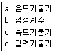
6. 밀도가 1000㎏/m3인 액체가 수평으로 놓인 축소관을 마찰 없이 흐르고 있다. 단면 1에서의 면적과 유속은 각각 40cm2, 2m/s이고, 단면 2의 면적은 10cm2일 때 두 지점의 압력차이(P1-P2)는 몇 kPa인가?
7. 유체역학에서 다음과 같은 베르누이 방정식이 적용되는 조건이 아닌 것은?
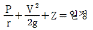
8. 펌프에서 전체 양정 10m, 유량 15m3/min, 회전수 700rpm을 기준으로 한 비속도는?
9. 어떤 유체의 운동문제에 8개의 변수가 관계되고 있다. 이 8개의 변수에 포함되는 기본차원이 질량 M, 길이 L, 시간 T일때 π정리로서 차원해석을 한다면 몇 개의 독립적인 무차원량 π를 얻을 수 있는가?
10. 비중 0.9인 액체가 지름 10㎝인 원관 속을 매분 50㎏의 질량유량으로 흐를 때, 평균속도는 얼마인가?
11. 기체 수송 장치 중 일반적으로 압력이 가장 높은 것은?
12. 송풍기의 공기유량이 3m3/s일 때, 흡입 쪽의 전압이 110kPa, 출구 쪽의 정압이 115kPa이고 속도가 30m/s이다. 송풍기에 공급하여야 하는 축동력은 얼마인가? (단, 공기의 밀도는 1.2㎏/m3이고, 송풍기의 전효율은 0.8이다.)
13. 중량 10000㎏f의 비행기가 270km/h의 속도로 수평 비행할 때 동력은? (단, 양력(L)과 항력(D)의 비 L/D＝5이다.)
14. 지름 20㎝ 이 원관이 한 변의 길이가 20㎝인 정사각형 단면을 가지는 덕트와 연결되어 있다. 원관에서 물의 평균속도가 2m/s일 때, 덕트에서 물의 평균속도는 얼마인가?
15. 원심펌프 중 회전차 바깥둘레에 안내깃이 없는 펌프는?
16. 정상유동에 대한 설명 중 잘못된 것은?
17. 공기 중의 소리속도 C는 C2＝(∂P/∂P)s로 주어진다. 이때 소리의 속도와 온도의 관계는? (단, T는 주위 공기의 절대온도이다.)
18. 그림과 같이 비중이 0.85인 기름과 물이 층을 이루며 뚜껑이 열린 용기에 채워져 있다. 물의 가장 낮은 밑바닥에서 받는 게이지 압력은 얼마인가? (단, 물의 밀도는 1000㎏/m3이다.)
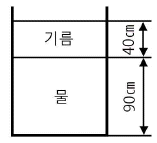
19. 온도가 일정할 때 압력이 10㎏f/cm2 abs인 이상기체의 압축률은 몇 cm2k/gf인가?
20. 충격파(shock wave)에 대한 설명 중 옳지 않은 것은?
2과목: 연소공학
21. 가스의 폭발등급은 안전간격에 따라 분류한다. 다음 가스 중 안전간격이 넓은 것부터 옳게 나열된 것은?
22. 프로판(C3H8)의 연소반응식은 다음과 같다. 프로판(C3H8)의 화학양론계수는?
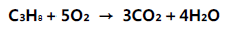
23. 프로판가스 10㎏ 을 완전 연소시키는데 필요한 공기의 양은 약 얼마인가?
24. 발생로 가스의 가스분석 결과 CO2 3.2%, CO 26.2%, CH4 4%, H2 12.8%, N2 53.8%이었다. 또한 가스 1Nm3 중에 수분이 50g이 포함되어 있다면 이 발생로 가스 1Nm3을 완전 연소시키는데 필요한 공기량은 약 몇 Nm3인가?
25. 파라핀계 탄화수소의 탄소수 증가에 따른 일반적인 성질변화로 옳지 않은 것은?
26. 가스압이 이상 저하한다든지 노즐과 콕크 등이 막혀 가스량이 극히 적게 될 경우 발생하는 현상은?
27. 다음과 같은 반응에서 A의 농도는 그대로 하고 B의 농도를 처음의 2배로 해주면 반응속도는 처음의 몇 배가 되겠는가?
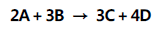
28. 오토 사이클에서 압축비(Ɛ)가 8일 때 열효율은 약 몇%인가? (단, 비열비[k]는 1.4이다.)
29. 다음 중 비엔트로피의 단위는?
30. 15℃의 공기 2L를 10㎏/cm2로 단열압축시킨다면 1단 압축의 경우 압축 후의 배출가스의 온도는 약 몇 ℃인가? (단, 공기의 단열지수는 1.4이다.)
31. 가스버너의 연소중 화염이 꺼지는 현상과 거리가 먼 것은?
32. 가스폭발의 방지대책으로 가장 거리가 먼 것은?
33. 포화증기를 일정 체적하에서 압력을 상승시키면 어떻게 되는가?
34. 층류예혼합화염과 비교한 난류예혼합화염의 특징에 대한 설명으로 옳은 것은?
35. 무연탄이나 코크스와 같이 탄소를 함유한 물질을 가열하여 수증기를 통과시켜 얻는 H2와 CO2를 주성분으로 하는 기체 연료는?
36. 방폭전기기기의 구조별 표시방법 중 틀린 것은?
37. 연소범위는 다음 중 무엇에 의해 주로 결정되는가?
38. 수소를 함유한 연료가 연소할 경우 발열량의 관계식 중 올바른 것은?
39. 다음 확산화염의 여러 가지 형태 중 대향분류(對向噴流) 확산 화염에 해당하는 것은?
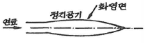
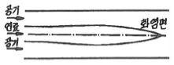
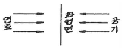
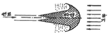
40. 다음 중 내연기관의 화염으로 가장 적당한 것은?
3과목: 가스설비
41. 프로판의 탄소와 수소의 중량비(C/H)는 얼마인가?
42. LP가스사용시설에 강제기화기를 사용할 때의 장점이 아닌것은?
43. 다음 각 가스의 폭발에 대한 설명으로 틀린 것은?
44. 냉동장치에서 냉매가 갖추어야할 성질로서 가장 거리가 먼 것은?
45. 외경과 내경의 비가 1.2가 이상인 산소가스 배관 두께를 구하는 식은
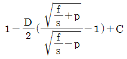
이다. D는 무엇을 의미하는가?46. 탄화수소에서 아세틸렌가스를 제조할 경우의 반응에 대한 설명으로 옳은 것은?
47. 고압가스시설에 설치한 전기방식의 시설의 유지관리 방법으로 옳은 것은?
48. 압력조정기의 구성이 아닌 것은?
49. LP가스 사용 시의 특징에 대한 설명으로 틀린 것은?
50. 고압가스 제조 장치의 재료에 대한 설명으로 틀린 것은?
51. LP 가스 탱크로리의 하역종료 후 처리할 작업순서로 가장 옳은 것은?
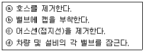
52. 전양정 20m, 유량 1.8m3/min, 펌프의 효율이 70%인 경우 펌프의 축동력(L)은 약 몇 마력(PS)인가?
53. 다음 중 산소 가스의 용도가 아닌 것은?
54. 정압기 특성 중 정상상태에서 유량과 2차 압력과의 관계를 나타내는 특성을 무엇이라 하는가?
55. 산소제조 장치에서 수분제거용 건조세가 아닌 것은?
56. 원유, 등유, 나프타 등 분자량이 큰 탄화수소 원료를 고온 (800~900℃)으로 분해하여 10000kcal/m3 정도의 고열량 가스를 제조하는 방법은?
57. 다음 [그림]은 가정용 LP가스사용시설이다. R1에 사용되는 조정기의 종류는?
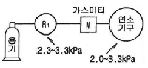
58. LPG배관에 직경 0.5㎜의 구멍이 뚫려 LP가스가 5시간 유출되었다. LP가스의 비중이 1.55 라고 하고 압력은 280㎜H2O 공급되었다고 가정하면 LPG의 유출량은 약 몇 L인가?
59. 왕복식 압축기의 연속적인 용량제어 방법으로 가장 거리가 먼 것은?
60. 금속재료에 대한 일반적인 설명으로 옳지 않은 것은?
4과목: 가스안전관리
61. 다음 연소기의 분류 중 전가스소비량의 범위가 업무용 대형 연소기에 속하는 것은?
62. 다음 중 독성가스가 아닌 것은?
63. 독성가스인 염소 500㎏을 운반할 때 보호구를 차량의 승무원 수에 상당한 수량을 휴대하여야 한다. 다음 중 휴대하지 않아도 되는 보호구는?
64. 온수기나 보일러를 겨울철에 장시간 사용하지 않거나 실온에 설치하였을 때 물이 얼어 연소기구가 파손될 우려가 있으므로 이를 방지하기 위하여 설치하는 것은?
65. 암모니아 가스의 장치에 주로 사용될 수 있는 재료는?
66. 고압가스안전관리법에 의한 산업통상자원부령이 정하는 고압가스 관련설비에 해당되지 않는 것은?
67. 액화석유가스 자동차에 고정된 탱크충전시설에서 자동차에 고정된 탱크는 저장탱크의 외면으로부터 얼마 이상 떨어져서 정지하여야 하는가?
68. 염소의 제독제로 적당하지 않은 것은?
69. 다음 가스 중 압력을 가하거나 온도를 낮추면 가장 쉽게 액화하는 것은?
70. 용기에 의한 액화석유가스 저장소의 자연환기설비에서 1개소 환기구의 면적은 몇 cm2 이하로 하여야 하는가?
71. 최소발화에너지에 영향을 주는 요인으로 가장 거리가 먼 것은?
72. 가스 폭발의 위험도를 옳게 나타낸 식은?
73. -162℃의 LNG(메탄 : 90%, 에탄 : 10%, 액비중 : 0.46)를 1atm, 30℃로 기화시켰을 때 부피의 배수(倍數)로 맞는 것은?
74. 산소를 취급할 때 주의사항으로 틀린 것은?
75. 정전기 제거설비를 정상상태로 유지하기 위한 검사항목이 아닌 것은?
76. 고압가스 운반 시에 준수하여야 할 사항으로 옳지 않은 것은?
77. 액화석유가스 충전소의 용기 보관장소에 충전용기를 보관하는 때의 기준으로 옳지 않은 것은?
78. 독성가스 저장탱크에 부착된 배관에는 그 외면으로 부터 일정거리 이상 떨어진 곳에서 조작할 수 있는 긴급차단 장치를 설치하여야 한다. 그러나 액상의 독성가스를 이입하기 위해 설치된 배관에는 어느 것으로 갈음할 수 있는가?
79. 암모니아를 사용하는 A공장에서 저장능력 25톤의 저장탱크를 지상에 설치하고자 할 때 저장설비 외면으로부터 사업소외의 주택까지 안전거리는 얼마 이상을 유지하여야 하는가? (단, A공장의 지역은 전용공업지역 아님)
80. 독성가스를 용기에 충전하여 운반하게 할 때 운반책임자의 동승기준으로 적절하지 않은 것은?
5과목: 가스계측기기
81. 유도단위는 어느 단위에서 유도되는가?
82. Stokes의 법칙을 이용한 점도계는?
83. 오르자트 분석기에 의한 배기가스 각 성분 계산법 중 CO의 성분 % 계산법은?
84. 에탄올, 헵탄, 벤젠, 에틸아세테이트로 된 4성분 혼합물을 TCD를 이용하여 정량분석하려고 한다. 다음 데이터를 이용하여 각 성분(에탄올 : 헵탄 : 벤젠 : 에틸아세테이트)의 중량분율(wt%)을 구하면?
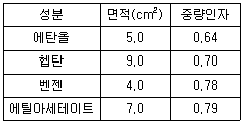
85. 배관의 모든 조건이 같을 때 지름을 2배로 하면 체적유량은 약 몇 배가 되는가?
86. 물체의 탄성 변위량을 이용한 압력계가 아닌 것은?
87. 가스비터의 설치장소로 적당하지 않은 것은?
88. 실내공기의 온도는 15℃이고, 이 공기의 노점은 5℃로 측정되었다. 이 공기의 상대습도는 약 몇 %인가? (단, 5℃, 10℃ 및 15℃의 포화수증기압은 각각 6.54㎜Hg, 9.21㎜Hg, 및 12.79㎜Hg이다.)
89. 유독가스인 시안화수소의 누출탐지에 사용되는 시험지는?
90. 접촉식 온도계의 측정 방법이 아닌 것은?
91. 가스크로마토그래피 분석기에서 FID(Flame Ionization Detector)검출기의 특성에 대한 설명으로 옳은 것은?
92. 목표값이 미리 정해진 변화를 하거나 제어순서 등을 지정하는 제어로서 금속이나 유리 등의 열처리에 응용하면 좋은 제어방식은?
93. 고속회전이 가능하므로 소형으로 대용량 계량이 가능하고 주로 대수용가의 가스측정에 적당한 계기는?
94. 광전관식 노점계에 대한 설명으로 틀린 것은?
95. 기준가스미터 교정주기는 얼마인가?
96. 제어의 최종신호 값이 이 신호의 원인이 되었던 전달 요소로 되돌려지는 제어방식은?
97. 로터리 피스톤형 유량계에서 중량유량을 구하는 식은? (단, C : 유량계수, A : 유출구의 단면적, W : 유체 중의 피스톤 중량, a : 피스톤의 단면적이다.)
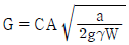
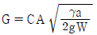
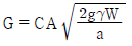
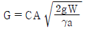
98. 연소 분석법에 대한 설명으로 틀린 것은?
99. 액주식 압력계에 봉입되는 액체로서 가장 부적당한 것은?
100. 속도분포식 U＝4y2/3일 때 경계면에서 0.3m지점의 속도구배 (S-1)는?